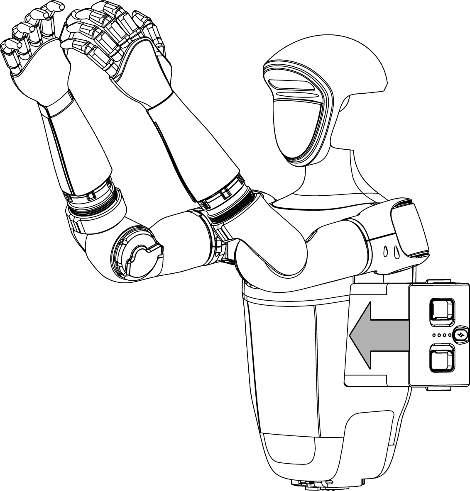
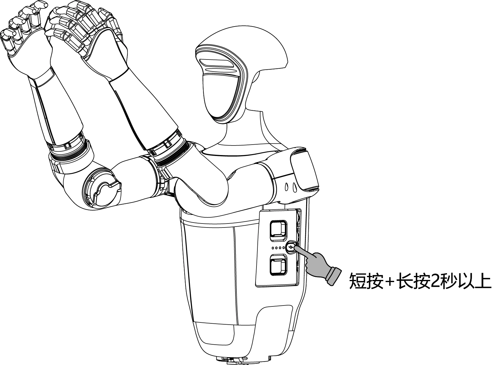
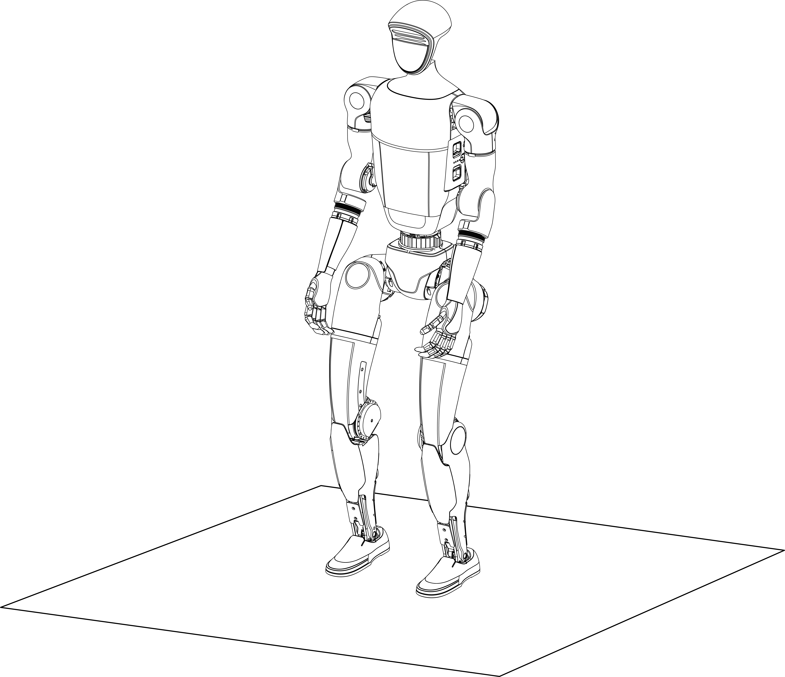
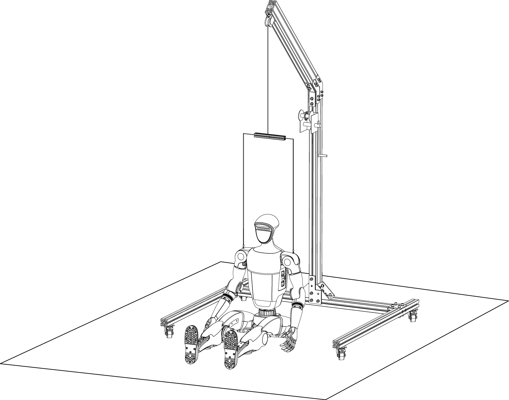
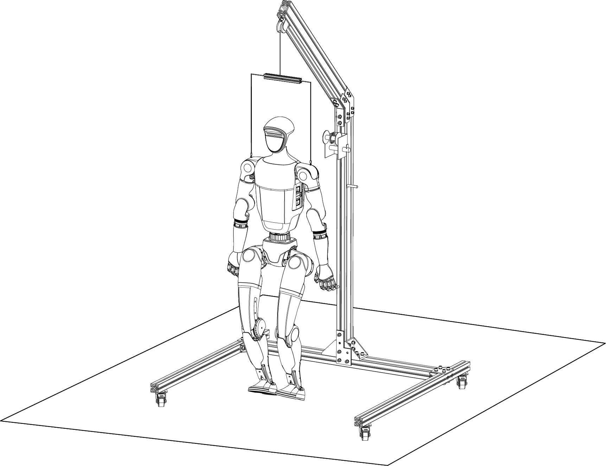
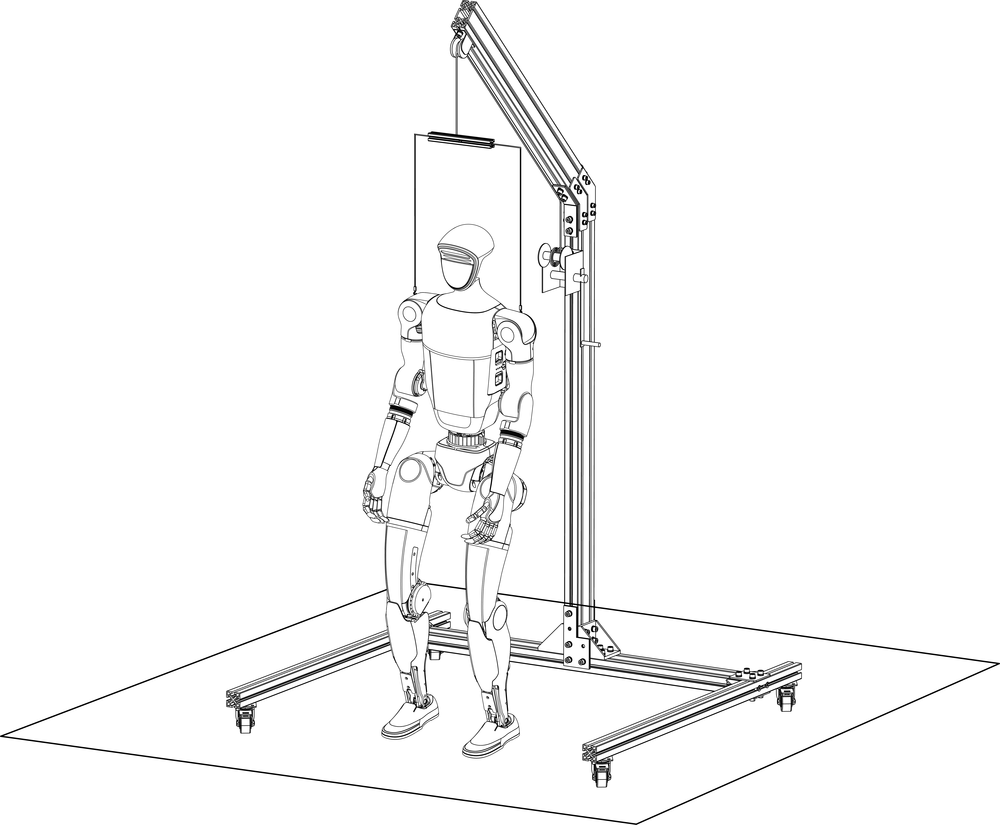
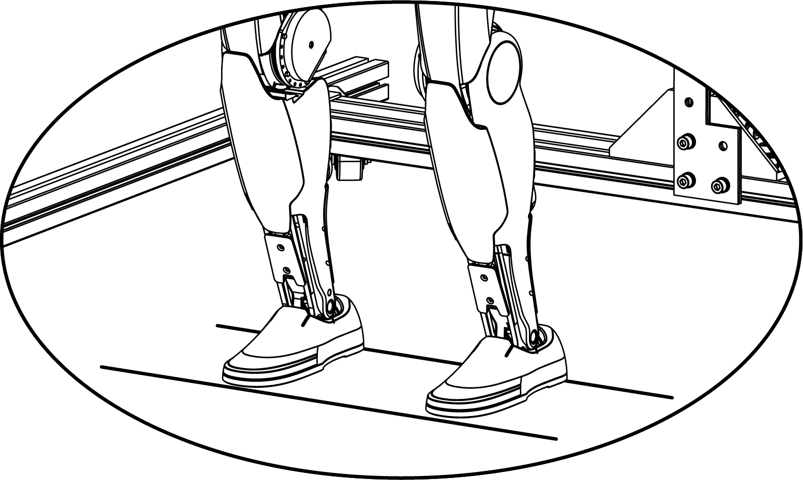
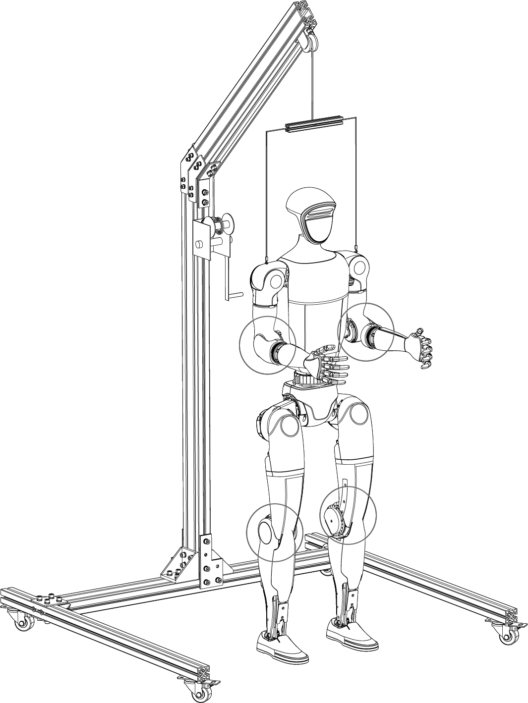
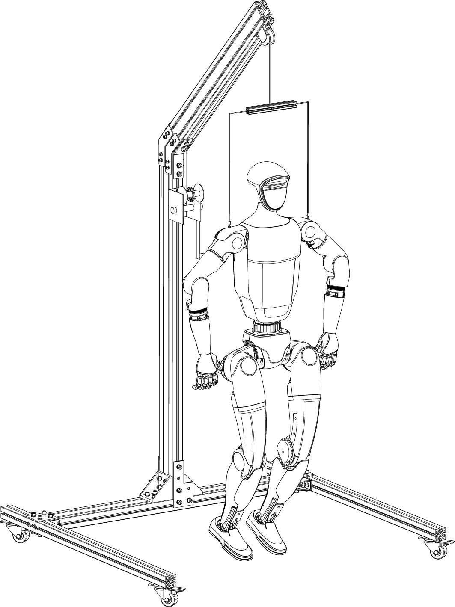

快速开始
教学视频
开关机教学
网络连接教学
遥控器绑定教学
姿态和动作教学
关节标定(23自由度)教学
关节标定(29自由度)教学
开发调试教学
开机流程
坐立开机
Step1：机身摆放 在条件允许的情况下，G1支持坐在椅子上开机。首先确保G1端坐在椅子上，手臂和腿部保持自然摆放。

Step2： 安装电池包
将 电池从机身侧面插入电池槽，注意安装方向,不要强行按压，以免损坏电池接口和卡扣，当听到“咔哒~”声，电池包安装完成。
| 插入电池 | 开机启动 |
|---|---|
 |
 |
Step3： 启动成功
短按+长按电源开机后，等待1分钟左右，待G1进入零力矩状态，按下 L1 + A 进入阻尼状态，此时拉住G1肩部后把手，同时按下 L1 + UP 键，帮助G1进入预备状态，如下图所示。当 G1 被扶直站立后，可以按下 R1 + X（单自由度腰） 或者 R1 + Y（三自由度腰） 进入运控状态。

悬挂开机
Step1：悬挂 G1
请使用保护架悬挂 G1 以确保安全。

Step2： 安装电池包
将电池从机身侧面插入电池槽，注意安装方向,不要强行按压，以免损坏电池接口和卡扣，当听到“咔哒~”声，电池包安装完成。
| 插入电池 | 开机启动 |
|---|---|
Step3：机身摆放
将 G1 悬挂起来后，按自然位置摆放。

Step4：开机启动
短按电池的电源开关键 1 次，再长按电源开关键 2 秒 以上，电池上电。
Step5：成功开机
开机全过程大概持续1分钟，请耐心等待。当所有关节处于零力矩状态，表示初始化成功。按下遥控器 L2 + B 进入阻尼以解锁控制，再按 L2 + UP 进入预备状态。此时 G1 姿态如下图所示。

Step6：下降悬挂绳
下降悬挂绳后，使 G1 双足触地。再次按下遥控器的 R2 + A，此时控制程序启动，G1 从预备状态进入运动状态，G1 开始调整步态后站立。

Step7：解开悬挂绳
待 G1 运动稳定后，可以完全释放挂钩。此时可操作遥控器的左右摇杆控制 G1 移动。
按下遥控器上的 START 可控制 G1 在站立状态和行走状态之间切换。
注意:
急停：当 G1 出现意外状态时，按下 L2 + B，G1 进入阻尼模式，此模式下，设备将会因为失去平衡控制而摔倒。
调试模式
当 G1 处于悬挂状态下，并且处于阻尼状态，同时按下遥控器 L2 + R2 组合键，G1 进入调试模式。此时按下 L2 + A ，G1 会进入位置模式，摆出特定诊断姿势。

再按 L2 + B，G1 进入阻尼状态。此过程可以用于确认 G1 是否成功进入调试模式，或者用于硬件故障排查。此时可以开始使用 SDK 进行开发调试。

注意:
在当前系统版本下，一旦 G1 开机，内置的运动控制程序会自动启动，即使您没有操作遥控器。该程序会定期发送速度为 0 的指令。然而，如果您在这种状态下使用 SDK 进行底层开发，可能会导致指令冲突，从而使 G1 出现抖动的情况。
因此，在需要使用 SDK 进行开发调试时，请务必确保 G1 已经进入调试模式，以停止运动控制程序发送指令，这样可以避免潜在的指令冲突问题。您可以按下 L2 + A 来确认是否进入了调试模式。
如果按下 L2 + A 后行为与教学视频不相符，可多次按下 L2 + R2，确保进入调试模式。
关机流程
坐立关机
关机前，请先操控 G1 背向站立在椅子前，确保机器人处于静止状态，手扶肩部后把手，按下L1+LEFT，顺势搀扶G1落座，落座后，按下 L1 + A，G1 再次进入阻尼模式。

当 G1 处于阻尼模式后，您可以短按加长按电池开关键来安全关机。
悬挂关机
重新将 G1 连接挂钩，在绳子对 G1 有拉力后，按下 L2 + B，G1 再次进入阻尼模式。
当 G1 处于阻尼模式后，您可以短按加长按电池开关键来安全关机、或按下 L2 + R2 进入调试模式，或按下 L2 + UP 重新进入预备状态。